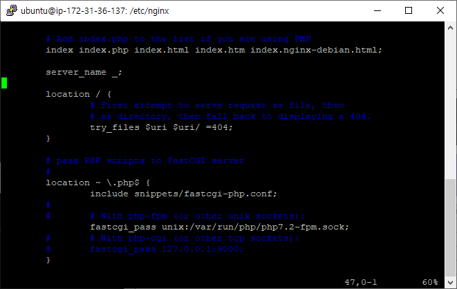

AWS ?
Amazon Web Services, AWS는 아마존에서 만든 Cloud service로 가상 컴퓨터와 스토리지, 네트워크 인프라 등 다양한 서비스를 제공한다.
클라우드 컴퓨팅은 네트워크 상에서 클라우드 서비스 자원을 빌려 사용하는 것을 뜻하며 세 분류로 나뉜다.
IaaS: Infrastructure as a Service, 컴퓨터 환경만 빌려 사용
ex) AWS EC2, Google Cloud Platform, Azure Virtual Machines, Naver Cloud PlatformPaaS: Platform as a Service, 플랫폼 서비스
ex) AWS Elastic Beanstalk, Windows Azure, HerokuSaaS: Software as a Service, 서비스를 이용할 수 있는 소프트웨어
ex) Google Apps, Mail, Youtube
AWS 시작하기
그럼 이제 인스턴스 시작을 눌러 아래의 시퀀스대로 AWS를 시작해보자.
AMI(Amazon Machine Image) 선택
AMI 는 인스턴스를 시작하는 데 필요한 템플릿으로 운영 체제나 서버가 포함되어 있다. 나는 Ubuntu 18.04를 선택했다.
인스턴스 유형 선택
프리 티어(처음 12개월 동안 무료 사용)가 가능한 t2.micro 를 선택한다.
인스턴스 구성
default
스토리지 추가
프리 티어 고객은 30GB까지 쓸 수 있다니까 최대로 설정해본다.
태그 추가
default
보안 그룹 구성
규칙을 추가할 수 있는데 우선 default인 SSH 유형만을 두고 시작하자.
검토
AWS에서는 인스턴스를 생성한 사용자만 접근할 수 있도록 키 페어를 부여한다. 다운받은 키 페어를 분실하지 않도록 주의해야 한다. 아래와 같이 인스턴스가 정상적으로 생성된 것을 볼 수 있다.
WinSCP를 이용해 AWS 이용하기
WinSCP 홈페이지에서 설치한 후 위에서 받은 개인 키를 이용해 서버에 접속할 수 있다. 프로그램을 실행하여 사이트 등록하는 과정은 여기에 잘 정리되어 있다.
putty 설치
putty까지 설치해주면 WinSCP 에서 putty SSH 터미널을 열 수 있다.
putty를 실행시켜 Nginx / MySQL / PHP을 각각 설치해보자.
Nginx 설치
$ sudo apt update
$ sudo apt install nginx
MySQL 설치
$ sudo apt install mysql-server
# mysql 보안 설정
$ sudo mysql_secure_installation
$ sudo mysql
mysql> SELECT user, authentication_string, plugin, host FROM mysql.user;
# auth_socket으로 되어 있는 root plugin을 mysql_native_password로 바꿔준다.
mysql> ALTER USER 'root'@'localhost' IDENTIFIED WITH mysql_native_password BY '[PASSWORD]';
mysql> FLUSH PRIVILEGES;
mysql> SELECT user, authentication_string, plugin, host FROM mysql.user;
mysql> exit
PHP 설치
$ sudo add-apt-repository universe
$ sudo apt install php-fpm php-mysql
$ sudo vi /etc/nginx/sites-available/default
# 아래처럼 주석을 해제해준다.
# php7.0-fpm.sock -> php7.2-fpm.sock
